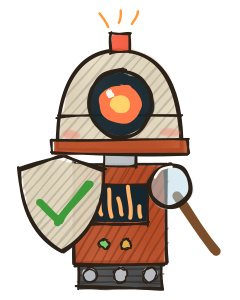

Hola, soy Maxi 👋
Construyo con
IA
,
3D
y tango.
Ingeniería Informática · UNLaM · Buenos Aires
$
whoami
maxi
· dev full-stack
$
ls ./intereses
agentes/ webgl/ audio/
ia-local/ hardware/ tango/
$
Juego · WebRTC P2P
Carrera
Neural
Juego de mesa 3D: seis IAs pelean por los mercados. Se juega en el navegador, sin servidor.
TYPESCRIPT · THREE.JS · ▶ JUGABLE

Motor · editor · skills IA
me
sa
Motor de juegos de mesa: mapas, reglas y arte como datos. Editor, balance y online P2P.
TYPESCRIPT · REACT · ▶ JUGABLE
Skill para agentes
Tramoya
Una idea, muchas piezas: presentación motion, reel, póster, landing y logo desde los mismos datos.
JAVASCRIPT · CLAUDE CODE · CODEX
Hardware + software
Bandone
AR
Un bandoneón digital y accesible para aprender tango. Misma botonera, mismo tacto.
EXPO PROYECTO · DIIT UNLaM
MC331
App Android · Audio
FOSI
fix
App plug-and-play que elimina el noise gate del amplificador FOSI MC331.
KOTLIN · C++ (ESP32)
Acústica 3D
Open
Sound
Editor acústico 3D: armás un espacio y simulás cómo suena, en el navegador.
TYPESCRIPT · VITE · THREE.JS
★★★★★
"Explica re bien, aprobé"
★★★☆☆
"Toma parciales largos"
Comunidad UNLaM
Profes
UNLaM
La guía de profesores de la UNLaM: opiniones de alumnos sobre profes, materias y comisiones.
REACT · TS · FIREBASE
FUENTE · apunte.pdf
«La derivada mide la tasa de cambio
instantánea
…»
Explicámelo con un ejemplo
@apunte
EXAMEN DE PRÁCTICA · 3/10
[1] ▶ plot(f′(x))
Fork · IA para estudiar
Open
Notebook
Mi fork de la alternativa libre a NotebookLM, hecho lugar de estudio: exámenes de práctica, Jupyter con tutor y resúmenes con citas verificadas.
PYTHON · FASTAPI · NEXT.JS · 70+ COMMITS
Gráficos procedurales
Flu
ido
Generador procedural de texturas. Sitio estático, sin build ni dependencias.
HTML · SIN BUILD · NETLIFY
> mirar
Estás en una parada del 60. Hay un kiosco cerrado.
> tomar mate
Está lavado.
Aventura de texto
Zork
argento
Una aventura de texto porteña donde la IA hace de narrador.
REACT · NODE · OPENAI